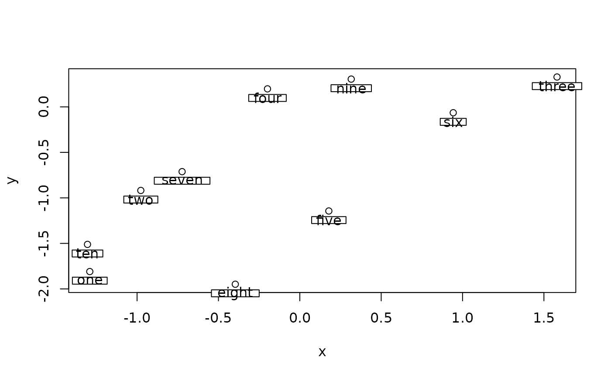
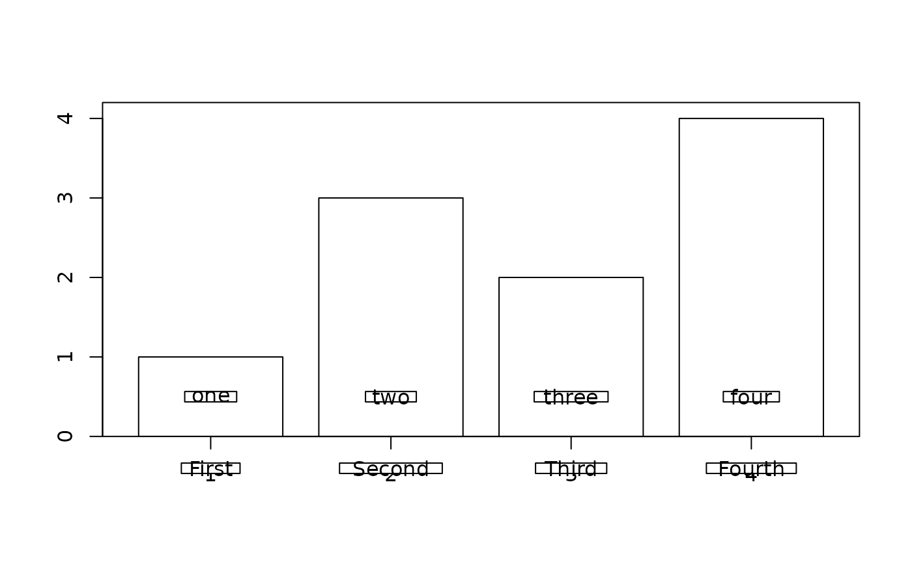
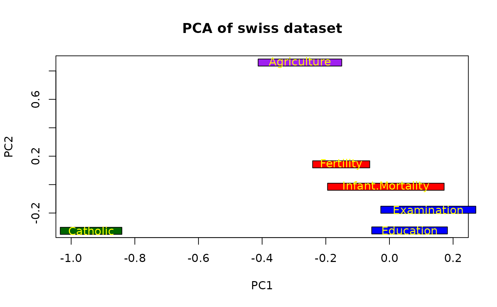

Place labels in boxes
boxed.labels.RdPlaces labels in boxes on an existing plot
Arguments
- x,y
x and y position of the centers of the labels. x can be an xy.coords list.
- bg
The fill color of the rectangles on which the labels are displayed (see Details).
- labels
Text strings
- border
Whether to draw borders around the rectangles.
- xpad,ypad
The proportion of the rectangles to the extent of the text within.
- srt
Rotation of the labels. If 90 or 270 degrees, the box will be rotated 90 degrees.
- cex
Character expansion. See text.
- adj
left/right adjustment. If this is set outside the function, the box will not be aligned properly.
- xlog
Whether the X axis is a log axis
- ylog
Whether the Y axis is a log axis
- ...
additional arguments passed to text.
Details
The label(s) are displayed on a rectangular background. This may be useful for visibility and is the reason that "transparent" background is not available. With the default textcol=NA, the function tries to work out whether white or black text will be more easily read based on the background color and displays the text accordingly. If the user specifies text colors in the additional arguments, these colors will override the automatic white/black above - see the last example.
Only right angle rotations are allowed in boxed.labels. Important change: xpad and ypad are now the full proportion of the box to text, not half. The user can now call cylindrect or gradient.rect for the background rectangle.
Note
This function is best for regularly spaced labels where overlapping is not a problem. See thigmophobe.labels for placing labels where overlap is likely.
Author
Jim Lemon - thanks to Thorn Thaler for the code allowing user-specified text colors and Flemming Skjoth for the log axis correction
Examples
x<-rnorm(10)
y<-rnorm(10)
plot(x,y,type="p")
nums<-c("one","two","three","four","five","six","seven","eight","nine","ten")
boxed.labels(x,y-0.1,nums)

# now label a barplot
xpos<-barp(c(1,3,2,4))
boxed.labels(xpos$x,0.5,nums[1:4])
# and add labels below the x axis ticks
boxed.labels(xpos$x,-0.4,c("First","Second","Third","Fourth"))

# perform a PCA on the "swiss" dataset and plot the first two components
data(swiss)
swiss.pca<-prcomp(swiss)
plot(swiss.pca$rotation[,1:2],xlim=c(-1,0.2),main="PCA of swiss dataset",
type="n")
boxed.labels(swiss.pca$rotation[1:6],swiss.pca$rotation[7:12],ypad=1.5,
colnames(swiss),bg=c("red","purple","blue","blue","darkgreen","red"),
col="yellow")
